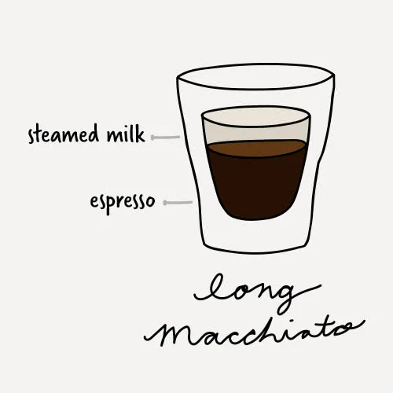
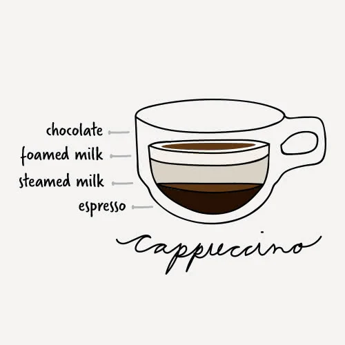
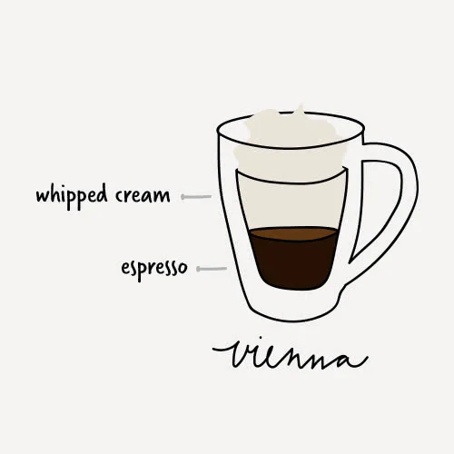

Types coffe
-
Espresso

The espresso, also known as a short black, is approximately 1 oz. of highly concentrated coffee. Although simple in appearance, it can be difficult to master.
Ratio: 1 shot of espresso
Cup: 2-4 oz. Espresso Cup -
Double Espresso

A double espresso may also be listed as doppio, which is the Italian word for double. This drink is highly concentrated and strong.
Ratio: 2 shots of espresso
Cup: 3-4 oz. Demitasse Cup -
Red Eye

The red eye's purpose is to add a boost of caffeine to your standard cup of coffee.
Ratio: 1 shot of espresso + 6 oz. of drip-brewed coffeebr
Cup: 8 oz. Coffee Mug -
Black Eye

The black eye is just the doubled version of the red eye and is very high in caffeine.
Ratio: 2 shots of espresso + 6 oz. of drip-brewed coffee
Cup: 8-10 oz. Coffee Mug -
Americano

Americanos are popular breakfast drinks and thought to have originated during World War II. Soldiers would add water to their coffee to extend their rations farther. The water dilutes the espresso while still maintaining a high level of caffeine.
Ratio: 1 shot of espresso + 3 oz. of hot water
Cup: 5-6 oz. Glass Coffee Mug -
Long Black

The long black is a similar coffee drink to the americano, but it originated in New Zealand and Australia. It generally has more crema than an americano.
Ratio: 2 shots of espresso + 3 oz. of hot water
Cup: 6-8 oz. Glass Coffee Mug -
Macchiato

The word macchiato means mark or stain. This is in reference to the mark that steamed milk leaves on the surface of the espresso as it is dashed into the drink. Flavoring syrups are often added to the drink according to customer preference.
Ratio: 1 shot of espresso + 1 to 2 teaspoons of steamed milk
Cup: 3 oz. Glass Espresso Cup -
Long Macchiato
Often confused with a standard macchiato, the long macchiato is a taller version and will usually be identifiable by its distinct layers of coffee and steamed milk.
Ratio: 2 shots of espresso + 2 to 4 teaspoons of steamed milk
Cup: 5 oz. Rocks Glass -
Cortado

The cortado takes the macchiato one step further by evenly balancing the espresso with warm milk in order to reduce the acidity.
Ratio: 1 shot of espresso + 1 oz. of warm milk + 1 cm of foam
Cup: 5 oz. Rocks Glass -
Breve
The breve provides a decadent twist on the average espresso, adding steamed half-and-half to create a rich and creamy texture.
Ratio: 1 shot of espresso + 3 oz. of steamed half-and-half + 1 cm of foam
Cup: 5-7 oz. Low Cup -
Cappuccino
This creamy coffee drink is usually consumed at breakfast time in Italy and is loved in the United States as well. It is usually associated with indulgence and comfort because of its thick foam layer and additional flavorings that can be added to it.
Ratio: 1-2 shots of espresso + 2 oz. of steamed milk + 2 oz. of foamed milk + sprinkling of
chocolate powder (optional)
Cup: 6-8 oz. Cappuccino Mug
-
Flat White
flat white also originates from New Zealand and Australia and is very similar to a cappuccino but lacks the foam layer and chocolate powder. To keep the drink creamy rather than frothy, steamed milk from the bottom of the jug is used instead of from the top.
Ratio: 1 shot of espresso + 4 oz. of steamed milk
Cup: 6 oz. Glass Tumbler -
Cafe Latte

Cafe lattes are considered an introductory coffee drink since the acidity and bitterness of coffee are cut by the amount of milk in the beverage. Flavoring syrups are often added to the latte for those who enjoy sweeter drinks.
Ratio: 1 shot of espresso + 8-10 oz. of steamed milk + 1 cm of foam
Cup: 14 oz. Mixing Glass -
Mocha

The mocha is considered a coffee and hot chocolate hybrid. The chocolate powder or syrup gives it a rich and creamy flavor and cuts the acidity of the espresso.
Ratio: 1 shot of espresso + 1-2 oz. of chocolate syrup/powder + 1-3 oz. of steamed milk + 2-3 cm of
foam or whipped cream
Cup: 6-8 oz. Irish Coffee Mug -
Vienna
There are a few variations on the Vienna, but one of the most common is made with two ingredients: espresso and whipped cream. The whipped cream takes the place of milk and sugar to provide a creamy texture.
Ratio: 1-2 shots of espresso + 2 oz. of whipped cream
Cup: 4-5 oz. Espresso Mug -
Affogato

Affogatos are more for a dessert coffee than a drink you would find at a cafe, but they can add a fun twist to your coffee menu. They are made by pouring a shot of espresso over a scoop of vanilla ice cream to create a sweet after-meal treat.
Ratio: 1-2 shots of espresso + 1 scoop of vanilla ice cream br Cup: 5-7 oz. Dessert Dish -
Cafe au Lait

The cafe au lait is typically made with French press coffee instead of an espresso shot to bring out the different flavors in the coffee. It is then paired with scalded milk instead of steamed milk and poured at a 50/50 ratio.
Ratio: 5 oz. French press coffee + 5 oz. scalded milk
Cup: 12 oz. Coffee Mug -
Iced Coffee

Iced coffees become very popular in the summertime in the United States. The recipes do have some variance, with some locations choosing to interchange milk with water in the recipe. Often, different flavoring syrups will be added per the preference of the customer.
Ratio: 2 oz. drip coffee or espresso + 4 oz. of ice + 4-6 oz of milk or water + flavoring syrup to taste
Cup: 14 oz. Mixing Glass